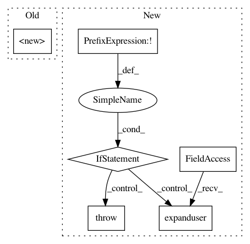

a947d66d28baaae1302363556a8a18b04fa6aa40,gluonnlp/embedding/evaluation.py,ThreeCosMul,__init__,#ThreeCosMul#Any#Any#Any#,249
Before Change
def __init__(self, idx_to_vec, k=1, eps=1E-10, **kwargs):
super(ThreeCosMul, self).__init__(**kwargs)
self.k = k
self.eps = eps
After Change
Parameters
----------
kind : ["similarity", "analogy", None]
Return only valid names for similarity, analogy or both kinds of functions.
Returns
-------
dict or list:
A list of all the valid evaluation function names for the specified
kind. If kind is set to None, returns a dict mapping each valid name to
its respective output list. The valid names can be plugged in
`gluonnlp.model.word_evaluation_model.create(name)`.
In pattern: SUPERPATTERN
Frequency: 3
Non-data size: 6
Instances
Project Name: dmlc/gluon-nlp
Commit Name: a947d66d28baaae1302363556a8a18b04fa6aa40
Time: 2018-08-16
Author: leonard@lausen.nl
File Name: gluonnlp/embedding/evaluation.py
Class Name: ThreeCosMul
Method Name: __init__
Project Name: vatlab/SoS
Commit Name: 9e36cd48e96f8323726e6808a689a426761b1237
Time: 2016-12-29
Author: ben.bog@gmail.com
File Name: sos/sos_step.py
Class Name: Base_Step_Executor
Method Name: prepare_runtime
Project Name: vatlab/SoS
Commit Name: e15942dd6415dae2d97cfa583ab29f36f655e733
Time: 2016-12-29
Author: ben.bog@gmail.com
File Name: sos/sos_step.py
Class Name: Base_Step_Executor
Method Name: prepare_runtime